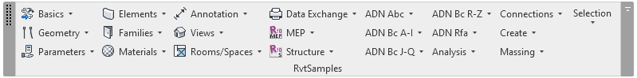

RvtSamples 2019
I already described how I installed Revit 2019, compiled the Revit 2019 SDK samples, migrated RevitLookup to the new version, The Building Coder samples, the AdnRme MEP HVAC and electrical samples and the AdnRevitApiLabsXtra training labs.
In the course of the last post, I forgot to mention setting up RvtSamples.
Just like the migration to previous versions, this is not a trivial undertaking.
Here are the discussions of the previous migrations to the Revit 2017 SDK and the Revit 2018.
To curt a long story short and simply share my current working RvtSamples source code for the Revit 2019 SDK, here
is RvtSamples_2019.zip containing my modified files.
It also includes some of the originals renamed by adding the suffix original.
I hope you find this useful.

Please let me know if you find anything is missing.
Todo: I have not even checked yet whether the new Revit 2019 SDK samples have been included yet.
I strongly suspect not, sorry to say... stay tuned...